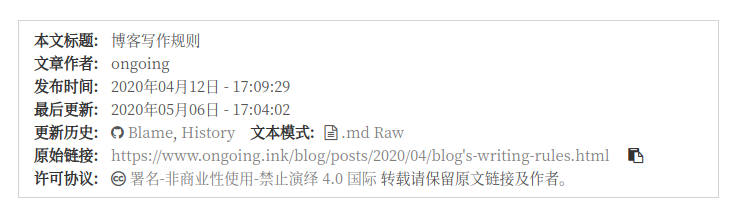

一段时间之前，看到过一篇博客，博客的最下方有一个按钮，点击之后可以看到博主同步在github中的markdown源文件，我觉得这个作用很不错。所以经过一番搜索之后，发现了一篇实现此功能的博客(参考中的第一篇)，还搜索了一下swig的语法特性，当然是不需要太多的知识的，因为参考中是ejs语法，这里大概就只需要知道****是变量的写法就足够了。
作用
- 点击进入仓库可以清晰发现文章增加或者删减的历史记录
- 可以在github的
issues中讨论（稍稍充当评论系统???)
效果

可以看到更新历史一行有三项:
Blame: 左边是commit信息，右边是对应代码History: 文章修改历史.md Raw: 文章markdown源文件
步骤
首先需要新建一个仓库。仓库建好之后, 将博客根目录/source/_posts/文件夹下的文件push到github我们新建的仓库中，在我们的博客修改过后，需要我们手动进行上传。
将下方代码添加至themes/next/layout/_macro/my-copyright-swig下^1, 注意这里的my-copyright-swig是我另建的显示文章结束后版权的文件。创建博客版权的文章在这里。
1
2
3
4
5
6
7
8
9
10
11
12
13
14
15
16
17
18
19
20
21
22
23
24
25
26
27
28
29
30
31
32
33
34
35
36
37
38
39
| {% if page.copyright %}
<div class="my_post_copyright">
<script src="//cdn.bootcss.com/clipboard.js/1.5.10/clipboard.min.js"></script>
<!-- JS库 sweetalert 可修改路径 -->
<script type="text/javascript" src="http://jslibs.wuxubj.cn/sweetalert_mini/jquery-1.7.1.min.js"></script>
<script src="http://jslibs.wuxubj.cn/sweetalert_mini/sweetalert.min.js"></script>
<link rel="stylesheet" type="text/css" href="http://jslibs.wuxubj.cn/sweetalert_mini/sweetalert.mini.css">
<p><span>本文标题:</span>{{ page.title }}</a></p>
<p><span>文章作者:</span>{{ theme.author }}</a></p>
<p><span>发布时间:</span>{{ page.date.format("YYYY年MM月DD日 - HH:mm:ss") }}</p>
<p><span>最后更新:</span>{{ page.updated.format("YYYY年MM月DD日 - HH:mm:ss") }}</p>
+ <p>
+ <span>更新历史:</span><i class="fa fa-github"></i>
+ <a href="https://github.com/ONGOING-Z/Hexo-blog-backup/blame/master/{{ page.date.format("YYYY-MM-DD") }}-{{ page.title }}.md" title="顺序查看文章各部分修改记录" target = "_blank">Blame</a>,
+ <a href="https://github.com/ONGOING-Z/Hexo-blog-backup/commits/master/{{ page.date.format("YYYY-MM-DD") }}-{{ page.title }}.md" title="查看文章有关更新记录" target = "_blank">History</a><span class="raw">文本模式:</span><i class="fa fa-file-text-o"></i>
+ <a href="https://raw.githubusercontent.com/ONGOING-Z/Hexo-blog-backup/commits/master/{{ page.date.format("YYYY-MM-DD") }}-{{ page.title }}.md" title="查看 & 下载文章 Markdown 原始文本" target = "_blank"> .md Raw</a>
+ </p>
<p><span>原始链接:</span><a href="{{ url_for(page.path) }}" title="{{ page.title }}">{{ page.permalink }}</a>
<span class="copy-path" title="点击复制文章链接"><i class="fa fa-clipboard" data-clipboard-text="{{ page.permalink }}" aria-label="复制成功！"></i></span>
</p>
<p><span>许可协议:</span><i class="fa fa-creative-commons"></i> <a rel="license" href="https://creativecommons.org/licenses/by-nc-nd/4.0/" target="_blank" title="Attribution-NonCommercial-NoDerivatives 4.0 International (CC BY-NC-ND 4.0)">署名-非商业性使用-禁止演绎 4.0 国际</a> 转载请保留原文链接及作者。</p>
</div>
<script>
var clipboard = new Clipboard('.fa-clipboard');
clipboard.on('success', $(function(){
$(".fa-clipboard").click(function(){
swal({
title: "",
text: '复制成功',
html: false,
timer: 500,
showConfirmButton: false
});
});
}));
</script>
{% endif %}
|
其中绿色部分代码是实现效果的代码。这之中我们修改href的属性对应自己的仓库信息和文章信息即可。
参考
[1] 关联 GitHub, 让 Hexo 支持查看文章更新历史
[2] hexo变量
[3] https://www.jianshu.com/p/93170e7413e9